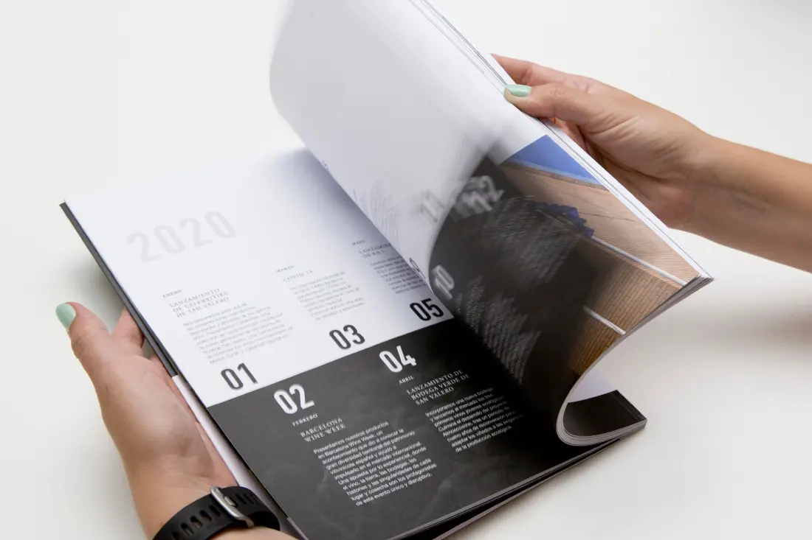

Trabajo
A lo largo de mi carrera he participado en diferentes tipos de trabajo que abarcan diseño, desarrollo, creación de contenido y más. Aquí puedes explorar algunas de mis experiencias y proyectos destacados.
Diseño editorial para revistas culturales. Creación de portadas, diagramación y elección de tipografía adecuada.

Desarrollo de sitios web responsivos con HTML, CSS y estructuras semánticas bien organizadas.

Creación de campañas gráficas para redes sociales, adaptadas a distintos formatos y públicos.